2025-2026学年七年级数学上学期期中模拟卷
强化卷·参考答案
一、选择题：本题共12小题，每小题3分，共36分。在每小题给出的四个选项中，只有一项是符合题目要求的。
1 | 2 | 3 | 4 | 5 | 6 | 7 | 8 | 9 | 10 | 11 | 12 |
D | A | B | C | C | C | C | B | B | D | A | A |
二、填空题：本题共6小题，每小题2分，共12分。
13． 14．
14． ;3 15．
;3 15．
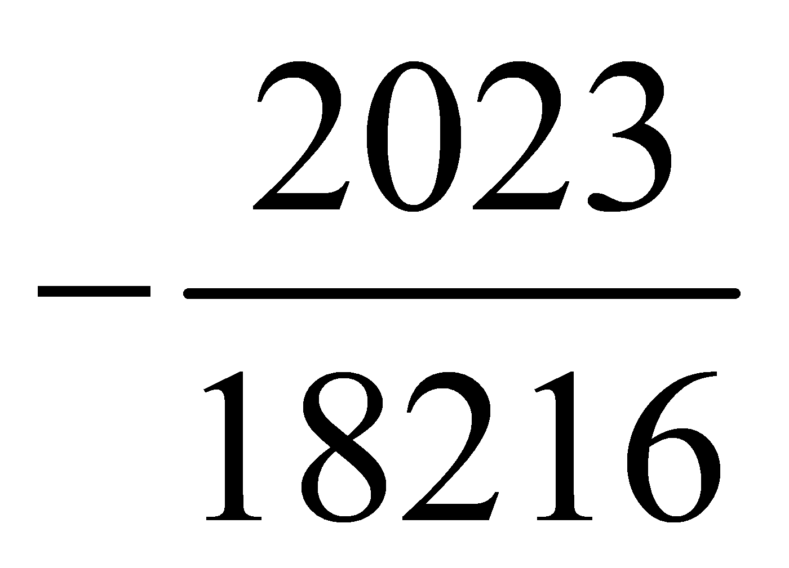
16． 17．
17． ;
; 18．9
18．9三、解答题（本题共8小题，共72分．解答应写出文字说明、证明过程或演算步骤．）
19．（6分）
【详解】（1）解：原式

 ；（2分）
；（2分）
（2）解：原式
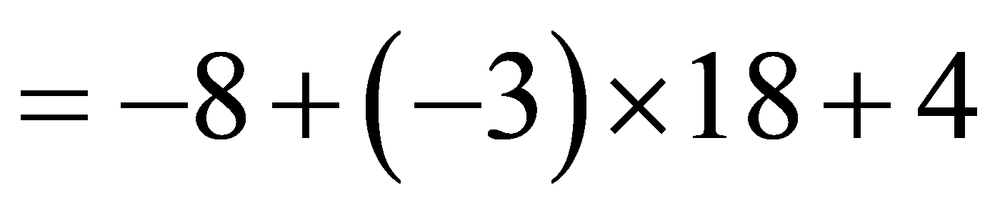
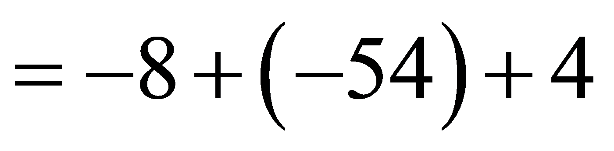
 ；（4分）
；（4分）
（3）解：原式
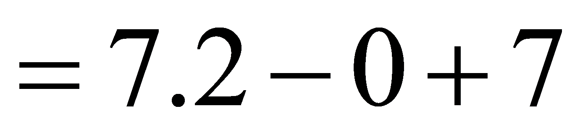
 ．（6分）
．（6分）
20．（6分）
【详解】（1）解：∵ ，
， ，
，
∴
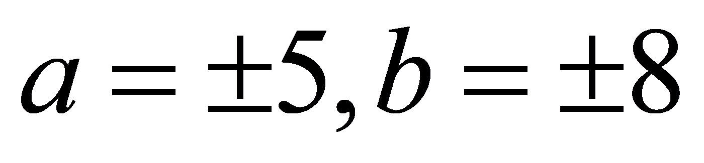
；（2分）（2）解：∵ ，，
，，
∴当 时，
时， ，
， ；
；
当 时，
时， ，
， ．
．
综上可知， 的值为
的值为 ．（6分）
．（6分）
21．（8分）
【详解】（1）解：由数轴可知 ，
，
∴ ，
，
∴
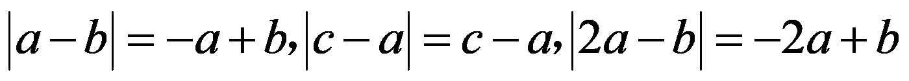
故答案为： ；
； ；
； ；（4分）
；（4分）
（2）解：∵
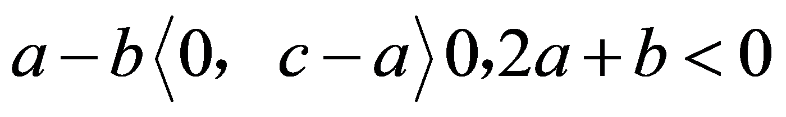
，∴
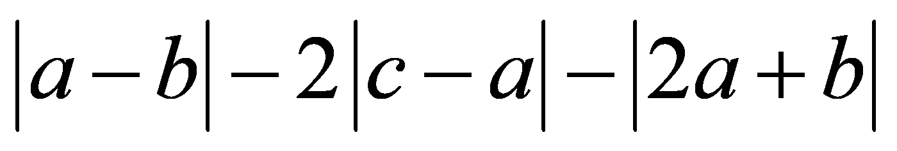
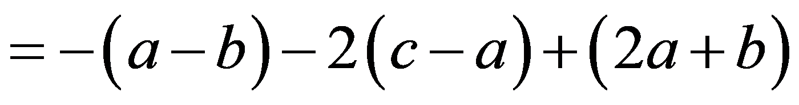
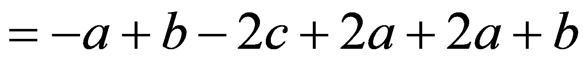
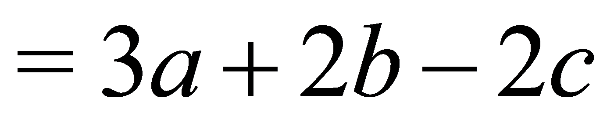
．（8分）22．（8分）
【详解】（1）解：将正方体沿图中粗线所在的棱剪开，则展开图为：
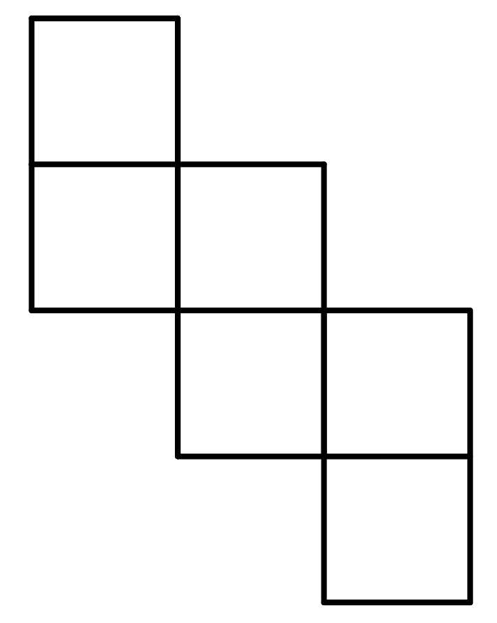
故答案为：③；（3分）
（2）解：如图，
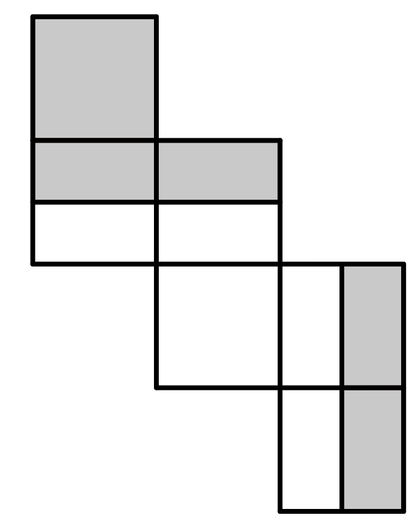
（3）解：∵
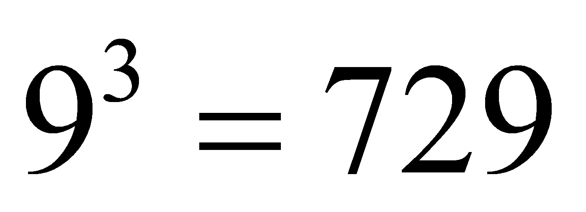
，∴大正方体的边长为
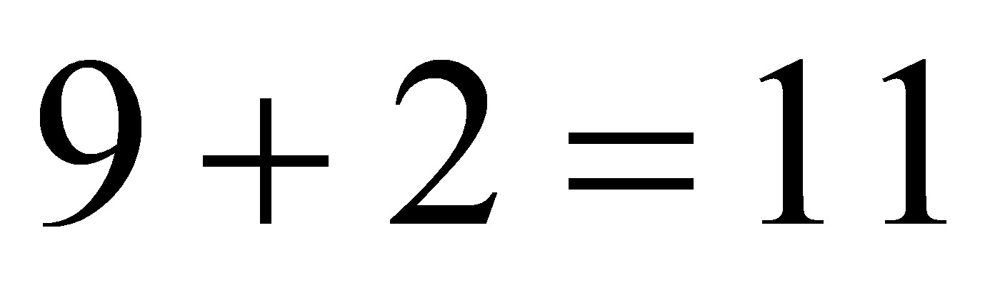
，答：大正方体的边长为．（5分）
23．（10分）
【详解】（1）解：
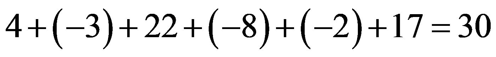
，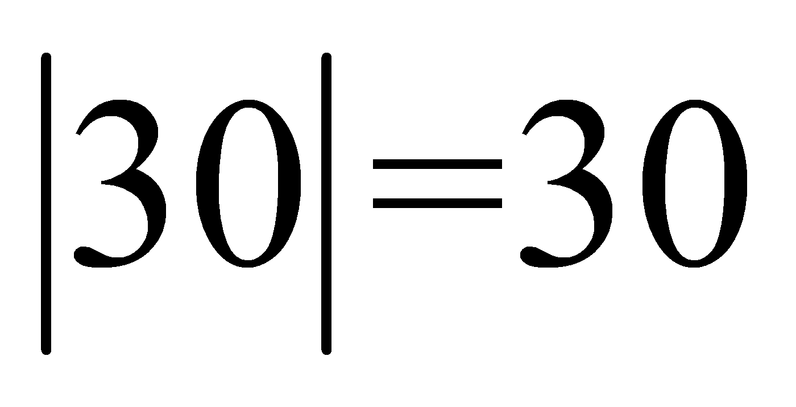
，则收工时距A地30千米；（4分）
（2）解： （千米），
（千米），
 （元）
（元）
则从A地出发到收工需油费 元.（10分）
元.（10分）
24．（10分）
【详解】（1）解： ，
，
故答案为：50；（2分）
（2）解：设“X”形框内中间一个数为 ，其余四个数分别为
，其余四个数分别为 ，
，
则这五个数的和为
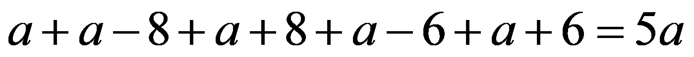
；（5分）（3）解：不存在，理由如下：
 ，
，
解得：
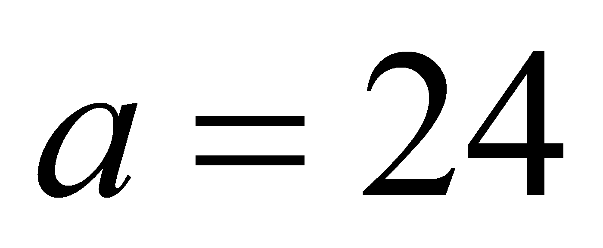
，则 ，此数不存在，
，此数不存在，
故不存在5个数的和等于120．（10分）
25．（12分）
【详解】（1）当一次性购物标价总额是300元时，
甲超市实付款为： 元，
元，
超市实付款为：
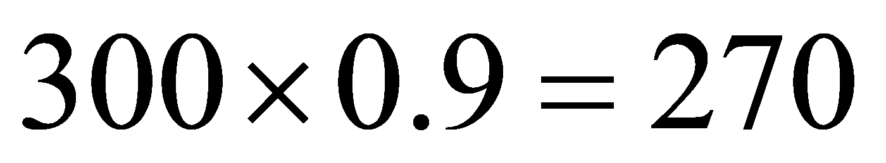
元，答：当一次性购物标价总额是300元时，甲、乙超市实付款分别是 元、
元、
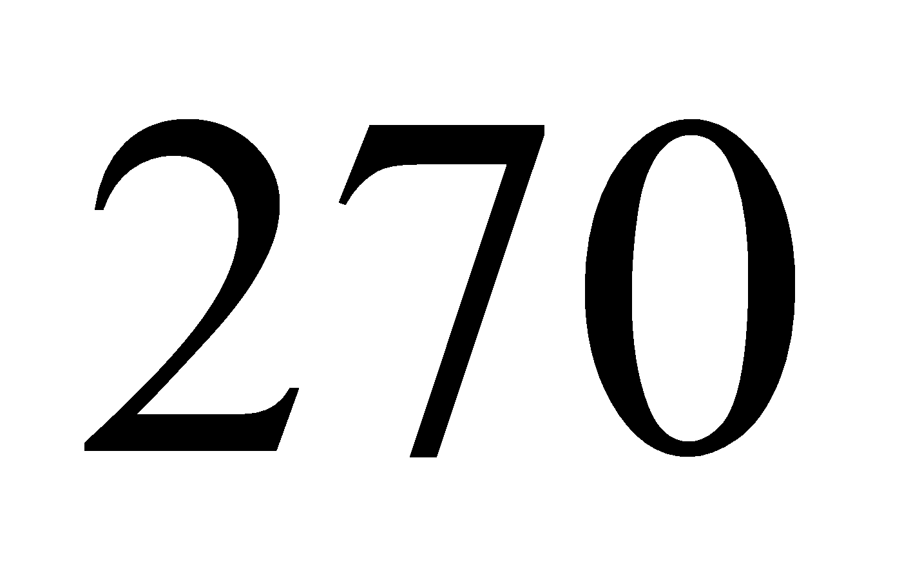
元．（3分）（2）当一次性购物标价总额是500元时，
甲超市实付款为： 元，
元，
超市实付款为：
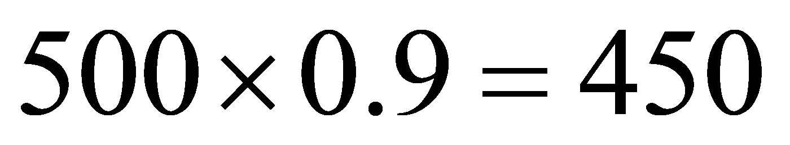
元，由于 ，
，
故 ，
，
设标价总额是 时，甲、乙超市实付款一样，
时，甲、乙超市实付款一样，
则
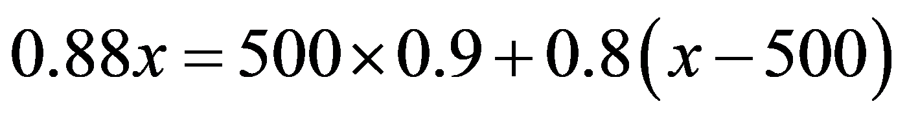
，解得 ，
，
答：标价总额是
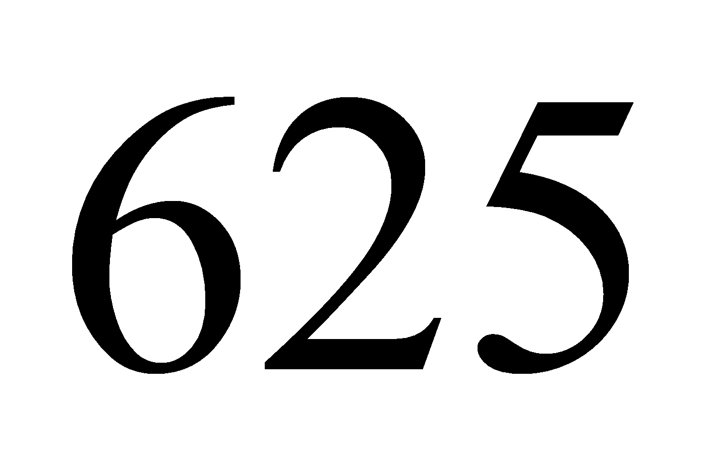
元时，甲、乙超市实付款一样．（7分）（3）小王两次到乙超市分别购物付款198元和466元，
第一次购物付款 元，购物标价可能是元，也可能是
元，购物标价可能是元，也可能是 元，
元，
第二次购物付款466元，购物标价为
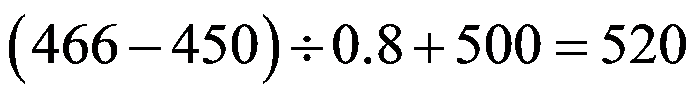
元，两次购物标价为：
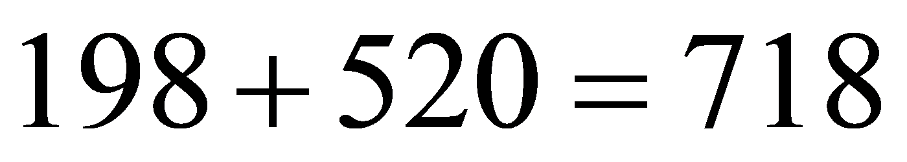
元，或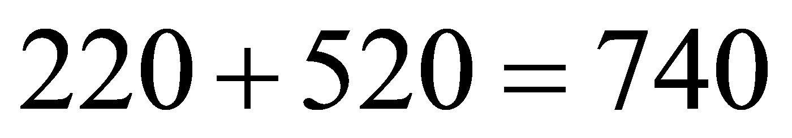
元，若他只去一次该超市购买同样多的商品，可以节省为：
 元，
元，
或 元（12分）
元（12分）
答：他只去一次该超市购买同样多的商品，可以节省 元或
元或 元．
元．
【点睛】本题考查一元一次方程，理解两家超市优惠方案，进行分类讨论是解题的关键．
26．（12分）
【详解】（1）因为 ，
， ，
，
所以 ，
，
所以点A表示的数是 ，点B表示的数是
，点B表示的数是 ；（3分）
；（3分）
（2）①由已知得 ，
， ，
，
因为M为 的中点，
的中点，  ，
，
所以
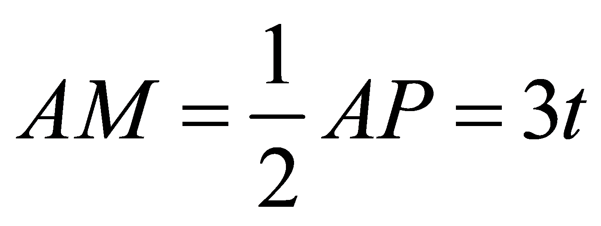
， ，
，则点M对应的数为 ，点M，N对应的数
，点M，N对应的数
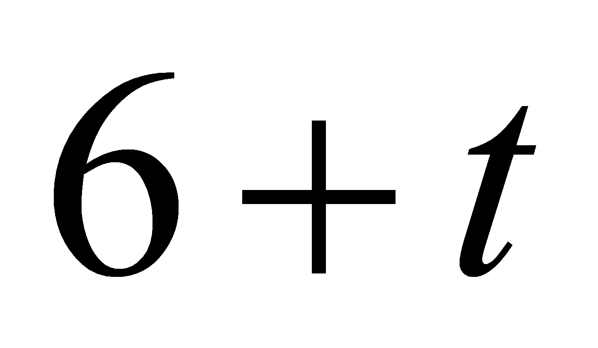
；（6分）②由题意知，
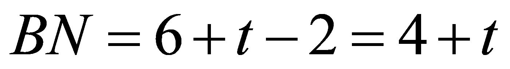
，当点M在点O的左侧时， ，
，
若
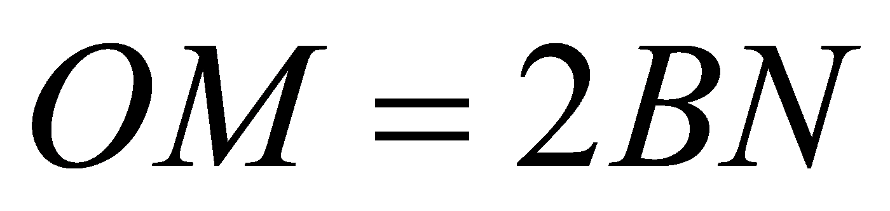
，则 ，
，解得 ，（9分）
，（9分）
当点M在点O的右侧时， ，
，
若，则 ，
，
解得 ；
；
综上所述，当秒或秒时，．（12分）